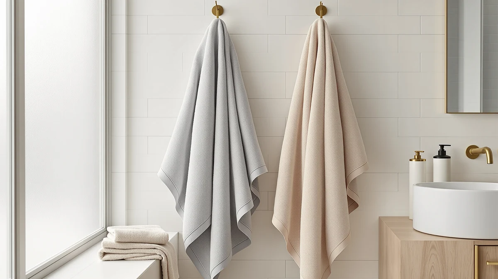

Best Bath Towels for College Students (2026)
Prices and picks verified as of August 2026. Independent, reader-supported reviews.


Quick Answer
After comparing price, material and owner reviews across seven sets, the best bath towels for college students are the White Classic Luxury White Bath Towel Set for most dorm budgets. It is 100% cotton, comes in an 8-piece set, and works out to under $5 a towel. Want more size or a faster-drying microfiber option? Keep reading for the six other picks and their trade-offs.
Our pick: Luxury White Bath Towel Set, $39.99 Check Price on Amazon
Bottom line: our top pick is the Luxury White Bath Towel Set of 8 Pieces - 100% Turkish Cotton at $39.99. The best budget option is the Utopia Towels 8 Piece Luxury Towel Set at $27.99.
Things to Know Before You Buy
- Dorm laundry is rough on fabric. Industrial washers and dryers run hotter than a home machine, so thin or blended towels wear out faster than 100% cotton ones.
- Set size beats single towels. An 8-piece set lets you keep one towel drying while another sits in the wash, cutting down on trips to the laundry room.
- Price for the best bath towels for college students runs $30 to $48 per set, and cost does not always track with quality once you compare cotton weight and stitching.
- Microfiber dries faster than cotton and packs smaller for a dorm closet, though several owners report it feels less absorbent for the first few uses.
- Extra-large towels suit taller students or anyone with long hair, but they take up more shelf space and dry more slowly on a standard dorm rack.
Finding the best bath towels for college students means balancing three things a dorm room rarely has enough of: space, laundry access and budget. A towel that soaks up water fast and dries before the next shower matters more when you share one machine with the rest of your floor, and a towel that survives a semester of communal laundry without turning stiff or thin is worth paying a little more for upfront.
We compared seven sets on material, weight, size and price, then checked what owners say after months of regular use. The White Classic Luxury White Bath Towel Set comes out ahead for most students: it is 100% cotton, sold in an 8-piece set that covers a full year of towel rotation, and priced at $39.99, which works out to under $5 a towel.
If you want something smaller and less expensive to start, the Utopia Towels 8 Piece Luxury set costs less at $30.39 and still uses 100% cotton construction. Students who need extra size for long hair or a taller frame should look at the NALIVO Extra Large Bath Towel instead. Across every price point we checked, the White Classic set remains our top pick among the best bath towels for college students because it pairs the lowest cost per towel with a fabric that holds up to weekly institutional-style washing.
Why You Should Trust Us
Best Bath Towels is run by writers who spend their time comparing home goods so you do not have to dig through hundreds of Amazon listings yourself. Ilane Tall, our home and bath expert, researched these seven towel sets by comparing manufacturer specifications, verified owner reviews and current Amazon pricing rather than relying on marketing copy. We do not run a fake testing lab, and no brand pays us to rank its products higher.
The picks below for the best bath towels for college students reflect what the fabric, size and price actually offer, not what a listing claims.
How We Picked
We started by pulling every bath towel set in our product database tagged for dorm and small-bathroom use, then narrowed the list using four filters: material, set size, price per towel and current owner ratings. Sets made from synthetic blends with no cotton content were cut first, since they tend to feel rougher against skin and hold odor longer between washes. We also dropped single-towel listings, because a student doing laundry every two to three weeks needs at least a four-piece rotation to stay covered.
From there we compared the remaining sets on price per towel, since a $48 four-pack and a $30 eight-pack solve different budget problems. The seven sets below represent the best bath towels for college students once material, size and price per towel are weighed against each other.
How We Compared
For each set, we compared manufacturer-listed fabric composition, dimensions and piece count against the listed price to calculate a cost per towel. We also read through verified Amazon owner reviews for each product, looking for repeated mentions of shrinkage, thinning after repeated washing, or lint shedding, since those are the complaints that matter most for a towel that sees weekly institutional laundry use.
Reviewers consistently note that 100% cotton towels hold their thickness longer than cotton-poly blends, which is why six of our seven picks are pure cotton. Owners of the microfiber option report faster drying times but a rougher initial feel, a trade-off worth knowing before you choose the best bath towels for college students for a specific need like faster turnaround between showers.
Our Picks

Luxury White Bath Towel Set
What we like
- 100% cotton construction that owners report holds up to repeated washing without turning rough
- Eight-piece set covers bath towels, hand towels and washcloths in one order
- Lowest cost per towel of any set we compared, at under $5 a piece
Flaws but not dealbreakers
- Plain white shows stains faster than the darker sets on this list
- Some reviewers mention thinner stitching at the hem compared to premium single-towel purchases
| Material | 100% cotton |
| Size | 8 Pieces Towel Set |
The White Classic Luxury White Bath Towel Set is our pick for most students because it solves the two biggest dorm laundry problems at once: cost and rotation. At $39.99 for eight pieces, which typically breaks down into bath towels, hand towels and washcloths, the per-towel price lands under $5, well below what you would pay for a single premium cotton towel elsewhere. The set uses 100% cotton, a material that owner reviews say holds its thickness better than cotton-poly blends after repeated institutional washing.
Because the set includes multiple pieces, you can keep one towel drying on a rack while another sits in the laundry bag, which matters when your dorm only has one shared machine per floor. The main trade-off is color: plain white shows dirt and staining faster than the gray or navy towels lower on this list, so students sharing a bathroom with roommates may want to weigh that against the lower price. Buyers say the fabric stays soft through the first several wash cycles, though heavy daily use will eventually thin any 100% cotton towel over a full college year.

American Soft Linen Luxury 6
What we like
- 100% cotton with a noticeably plusher weight than the budget sets on this list, according to owner reviews
- Six-piece set still covers a full rotation of bath towels, hand towels and washcloths
- The color options resist staining better than plain white, according to several reviews
Flaws but not dealbreakers
- Costs the same $39.99 as the 8-piece White Classic set but includes two fewer pieces
- Thicker cotton takes longer to dry on a standard dorm towel rack
| Material | 100% cotton |
| Size | 6 Pc Towel Set |
American Soft Linen Luxury 6 trades piece count for fabric weight. At the same $39.99 price as our top pick, this six-piece set includes two fewer towels, but reviewers describe the cotton as noticeably plusher, and say it holds that feel longer through repeated washing. If softness matters more to you than stretching every dollar across the maximum number of pieces, this is the set to look at.
The trade-off shows up in drying time. Heavier cotton takes longer to air-dry than the lighter towels in this comparison, which can be a problem if your dorm towel rack is small or you share hooks with a roommate. The darker color options resist visible staining better than plain white, several reviews note, which is worth factoring in if you are not doing laundry every week. For students prioritizing feel over the absolute lowest price per towel, American Soft Linen Luxury 6 is one of the best bath towels for college students who want a step up from basic.

Utopia Towels 8 Piece Luxury
What we like
- Lowest total price of any set on this list at $30.39 for eight pieces
- 100% cotton construction rather than a cheaper cotton-poly blend
- Eight pieces cover a full rotation without needing a second laundry trip mid-week
Flaws but not dealbreakers
- Some buyers say the towels feel thinner out of the package than the American Soft Linen or Cotton Paradise sets
- Fewer color options than competing sets in this price range
| Material | 100% cotton |
| Size | 8 Pieces Towel Set |
Utopia Towels 8 Piece Luxury is the least expensive full set we compared, at $30.39 for eight pieces, which works out to under $4 per towel. It uses 100% cotton rather than the synthetic blends that show up in some budget listings, so you are not sacrificing fabric quality to hit a lower price point.
The catch is thickness. Several reviews mention the towels arrive thinner than the American Soft Linen or Cotton Paradise sets on this list, which tracks with the lower price. For a first dorm setup or a backup set to keep in a car or gym bag, that trade-off is easy to accept. For a primary daily towel over four years of college, students who can stretch the budget a little further may prefer one of the heavier sets above. Utopia still ranks among the best bath towels for college students working with a strict budget, since it keeps the full 100% cotton, eight-piece rotation other sets charge more for.

American Soft Linen Luxury 4
What we like
- All four pieces are full 27x54 inch bath towels rather than a mix of sizes
- 100% cotton construction matches the brand's 6-piece set at the same price
- Larger surface area than the towels bundled into the multi-size sets on this list
Flaws but not dealbreakers
- No hand towels or washcloths included, so you may need a separate purchase for those
- Four pieces mean less rotation flexibility between laundry days than an 8-piece set
| Material | 100% cotton |
| Size | 27x54" Bath Towel Set |
American Soft Linen Luxury 4 skips the hand towels and washcloths that pad out most sets and puts the full $39.99 budget into four 27x54 inch bath towels. That size runs larger than what many bundled sets include, which matters if you find standard dorm towels too short to wrap around comfortably.
The trade-off is rotation. With only four towels and no smaller pieces for hands or face, you will do laundry more often than someone with an 8-piece set, and you will still need to buy washcloths separately if you use them. For students who already own hand towels or simply prefer full-size towels for everything, this set solves a real gap among the best bath towels for college students, most of which bundle in smaller pieces you may not need.

NALIVO Extra Large Bath Towel
What we like
- Microfiber construction dries noticeably faster than cotton, according to owner reviews, which helps in a shared dorm bathroom
- Extra-large sizing suits tall students or anyone who wants more coverage
- Packs smaller than cotton towels of the same size, freeing up closet space
Flaws but not dealbreakers
- Highest price on this list at $47.58 for six pieces
- Some reviewers report microfiber feels less absorbent than cotton for the first few washes
| Material | Microfiber |
| Size | 6Piece Towel Set |
The NALIVO Extra Large Bath Towel is the only microfiber option among the seven sets we compared, and it is also the most expensive at $47.58 for six pieces. Microfiber dries faster than cotton. Several reviews say that makes a real difference when a dorm bathroom has limited hanging space and towels need to be ready again within a day.
The extra-large sizing is the other selling point, giving more coverage than standard cotton towels for tall students or anyone who prefers a longer wrap. Some reviewers note that microfiber feels less absorbent than cotton right out of the package, though most say that improves after the first couple of washes. If quick drying and size matter more to you than sticking with traditional cotton, NALIVO is worth the higher price among the best bath towels for college students living in a small shared bathroom.

Cotton Paradise 100% Cotton Turkish
What we like
- Turkish cotton weave that reviewers describe as lighter and faster-absorbing than standard cotton terry
- Mid-range price of $35.99 sits between the budget and premium sets on this list
- Six pieces balance rotation without the higher cost of the 8-piece premium sets
Flaws but not dealbreakers
- Lighter weave means less plush than the heavier American Soft Linen towels
- Fewer pieces than the 8-piece sets, so laundry trips come around sooner
| Material | 100% cotton |
| Size | 6 Piece Towel Set |
Cotton Paradise uses a Turkish cotton weave, which tends to run lighter and more absorbent than standard cotton terry cloth. At $35.99 for six pieces, it sits in the middle of our price range, cheaper than the American Soft Linen and NALIVO sets but pricier than the Utopia budget option.
The lighter weave absorbs water quickly without feeling as heavy or slow to dry as thicker cotton towels, several reviews note. The trade-off is plushness. If you prefer a dense, spa-style towel, the American Soft Linen sets on this list feel heavier in hand. For students who want a towel that dries at a reasonable pace and absorbs well without the higher price of microfiber, Cotton Paradise lands as one of the best bath towels for college students looking for a middle-ground option.

Tens Towels Pack of 4
What we like
- 30 by 60 inch sizing is larger than the standard 27x54 inch towels on this list
- 100% cotton at $35.99, cheaper than the NALIVO microfiber option despite the larger size
- Four-pack keeps the per-towel cost reasonable for the increased size
Flaws but not dealbreakers
- No hand towels or washcloths included in the pack
- Larger towels take up more space on a dorm towel rack and take longer to dry than standard sizing
| Material | 100% cotton |
| Size | 30 X 60 Inches |
Tens Towels Pack of 4 offers 30 by 60 inch towels, larger than the 27x54 inch standard used by most sets on this list, at $35.99 for four pieces. That makes it cheaper than the NALIVO microfiber set while still delivering extra coverage in 100% cotton.
Because the pack only includes large bath towels, you will need a separate purchase for hand towels or washcloths if you use them daily. The bigger size also means more fabric to dry, which can be slower on a cramped dorm towel rack than a standard 27x54 inch towel. For students who specifically want oversized coverage in cotton rather than microfiber, this pack fills that gap among the best bath towels for college students without the higher price of the extra-large microfiber option.
Quick Comparison
| Product | Material | Price | Rating | Best for | Get it |
|---|---|---|---|---|---|
| Luxury White Bath Towel Set | 100% cotton | $39.99 | 4 | Lowest cost per towel | View on Amazon → |
| American Soft Linen Luxury 6 | 100% cotton | $39.99 | 4 | Plusher feel | View on Amazon → |
| Utopia Towels 8 Piece Luxury | 100% cotton | $30.39 | 4 | Tightest budget | View on Amazon → |
| American Soft Linen Luxury 4 | 100% cotton | $39.99 | 4 | Full-size towels only | View on Amazon → |
| NALIVO Extra Large Bath Towel | Microfiber | $47.58 | 4 | Fastest drying | View on Amazon → |
| Cotton Paradise 100% Cotton Turkish | 100% cotton | $35.99 | 4 | Lighter Turkish weave | View on Amazon → |
| Tens Towels Pack of 4 | 100% cotton | $35.99 | 4 | Oversized cotton | View on Amazon → |
How many bath towels do college students actually need?
Most students do well with six to eight towels between bath towels, hand towels and washcloths.
Is cotton or microfiber better for a dorm bathroom?
Cotton absorbs more water per use and feels closer to a traditional towel, while microfiber dries faster and packs smaller, which helps in a cramped dorm closet.
The Competition
Beyond the seven sets above, we looked at several other towel sets that did not make the final list. A handful of bamboo-blend sets looked appealing for their eco-marketing, but the sellers did not disclose actual cotton or bamboo-rayon ratios, which made a fair comparison impossible. We also passed on a few single-towel luxury listings priced above $25 per towel, since a per-towel cost that high does not fit most college budgets even when the fabric quality is strong.
Several license-branded college dorm towel sets were excluded too, because their fabric specs matched the budget cotton-poly blends we already ruled out during the picking stage, with a higher price attached to the branding. After comparing price per towel, material and owner feedback across everything we sourced, the White Classic Luxury White Bath Towel Set remains our answer for the best bath towels for college students who want the lowest cost without giving up 100% cotton.
Frequently Asked Questions
How many bath towels do college students actually need?
Most students do well with six to eight towels between bath towels, hand towels and washcloths. That is enough to go two to three weeks between laundry trips, which matters when you are sharing a machine with an entire floor. An 8-piece set like the White Classic or Utopia sets on this list covers that rotation in a single purchase.
Is cotton or microfiber better for a dorm bathroom?
Cotton absorbs more water per use and feels closer to a traditional towel, while microfiber dries faster and packs smaller, which helps in a cramped dorm closet. Owners report microfiber feels less plush for the first few washes, but the faster drying time can matter more than softness when your dorm bathroom has limited hanging space.
How often should you wash dorm bath towels?
A used towel should go in the wash after three to four uses to avoid a buildup of bacteria and odor, which is why an 8-piece set makes more sense than a 4-piece one for daily dorm use. Washing in warm water and skipping fabric softener, which coats cotton fibers and reduces absorbency, helps any of the sets on this list last through a full college year.